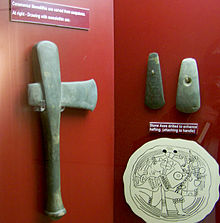
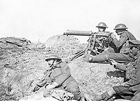

{kind=link}
В начале этого периода было характерно использование бронзового оружия. Появились различные бронзовые мечи и щиты (у древних эллинов и египтян). Затем оружие стали изготавливать из железа. В целом, оружие древнего мира делилось на оружие ближнего боя (мечи, секиры, копья) и метательное оружие (луки, пращи, дротики). В этот период кроме ручного оружия стали использовать и различные осадные машины (баллисты, катапульты, тараны). В частности вместе с баллистами появились и первые арбалеты.
Оружие — название устройств и предметов, конструктивно предназначенных для поражения живой или иной цели. После изобретения пороха широко стали применяться артиллерия и пороховые ракеты, а также пороховое стрелковое оружие. Но до изобретения и внедрения в массовое боевое применение пороха, основой армий были войска, вооружённые холодным ручным и метательным оружием.
К оружию относят устройства и предметы, конструктивно предназначенные для поражения живой или иной цели, предмет для нападения или обороны. Также — совокупность средств для охоты и ведения войны. В переносном значении оружие — какое-либо средство для борьбы с кем-нибудь и с чем-нибудь, для достижения поставленных целей.
Тем не менее, оружие не обязательно должно быть напрямую направлено на убийство человека. Например, Taser X26 является нелетальным оружием, поскольку выводит человека из строя, не нанося ему значительных повреждений. Электромагнитный импульс, теоретически, может быть применён как оружие, поскольку он выводит военную технику из строя, но при этом он малоопасен для живых существ. При этом, например, мачете может применяться в качестве холодного оружия, хоть и является инструментом.
Краткая история
Человечество использовало оружие с древних времен. Первыми видами оружия были палка и камень. С самого начала основным назначением оружия была в первую очередь защита от хищников, а потом — охота. Но потом оружие стало использоваться и в военных целях.
Для каждого исторического периода были характерны свои типы оружия. При этом оружие эволюционировало вместе с эволюцией общества. Более того, эволюция оружия практически всегда есть один из аспектов эволюции общества в целом.
Первобытные общества
Простейшие виды оружия наблюдаются у шимпанзе, что позволяет приверженцам теории эволюции человека от высших приматов предположить использование оружия ранними гоминидами ещё пять миллионов лет назад. Это были дубинки, примитивные копья и необработанные камни. Однако характер подобных ранних форм оружия не позволяет найти какие-либо однозначные археологические свидетельства его применения. (Собственно ранние гоминиды вполне могли использовать разнообразное примитивное оружие.)
Известны археологические находки копий, возраст которых составляет более 300 тысяч лет, а также наконечники для стрел, которые нашли в 2012 году близ немецкого города Шёнингена. Относящиеся к раннему палеолиту Шёнингенские копья считаются древнейшим известным холодным оружием людей.
Позже появилось каменное оружие. В различных регионах мира были найдены многочисленные каменные топоры, каменные наконечники стрел и копий. В то же время использовалось и оружие из дерева (например палицы), а также костяное оружие.
Древний мир
Средние века
В начале средневековое оружие не сильно отличалось от оружия предыдущего периода. Ещё в конце эпохи Древнего мира появились тяжеловооружённые катафрактарии, ставшие прообразом тяжеловооружённых рыцарей классического средневековья и соответственно понадобилось оружие, способное бороться с ними. Поэтому конец средних веков ознаменовался появлением огнестрельного оружия. Основными типами оружия в этот период были: холодное оружие ближнего боя, метательное оружие, а также огнестрельное и осадное оружие. Из холодного оружия наиболее распространены были мечи, кинжалы и боевые пики. (Собственно средневековые пики — прямые потомки македонских сарисс.) Кроме того, появляются различные сабли, шпаги, рапиры и т. п. Из метательного оружия также были распространены луки и арбалеты. Но вот пращи нашли боевое применение только как компактное метательное оружие, в ситуациях, когда компактность важнее дальности прицельной стрельбы. К огнестрельному оружию, появившемуся в тот период, можно отнести мушкеты, аркебузы, пищали, а также пушки и бомбарды. В арсенале осадного оружия тогда были как те же баллисты, катапульты, тараны, требучеты, так и первые образцы осадной артиллерии (в частности те же бомбарды). При этом процесс вытеснения осадного метательного оружия оружием осадной артиллерии уже набирает ход.
{kind=link}
Новое время
{kind=link}
В этот период огнестрельное оружие активно совершенствуется и оно полностью вытесняет метательное оружие вовсе. Происходит окончательное разделение огнестрельного оружия на ручное оружие и артиллерию. Во времена наполеоновских войн серьёзных изменений в вооружении не происходит. Но позднее Гражданская война в США дала толчок к модернизации вооружения. В частности изобретается многозарядное нарезное стрелковое оружие, заряжаемое с казны. (Одним из первых образцов такого оружия стала винтовка Спенсера.) Появляются и первые образцы казнозарядной нарезной артиллерии. Как следствие увеличивается скорострельность и дальность стрельбы огнестрельного оружия. Появляются пулемёты (сначала картечницы а затем и собственно пулемёты). В ходе Англо-бурских войн уже начали применяться бронепоезда. Во время Первой мировой войны было использовано химическое оружие, военная авиация и первые танки. В войне на море также появляются новые виды оружия: морские мины и торпеды. Начинают применяться подводные лодки.
Новейшее время
Происходит дальнейшее усовершенствование оружия. Особенно бурно этот процесс протекал во время Второй мировой войны. На сухопутных театрах военных действий решающую роль стали играть танки и авиация. Танки из средства поддержки пехоты превратились в бронетанковые войска, сыгравшие решающую роль во многих сражениях. Авиация окончательно разделилась на истребительную и бомбардировочную, штурмовую и разведывательную, а также на фронтовую и дальнюю. Причем бомбардировки (в том числе и мирных городов, находящихся далеко за линией фронта) стали иметь все большее значение. Из стрелкового оружия большую популярность получили автоматы. На море усилилась роль подводного флота. Важное значение приобрели авианосцы. К этому периоду относится первое боевое применение ядерного оружия. Позже главным средством его доставки стали разнообразные ракеты.
{kind=link}